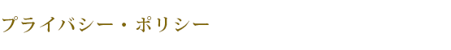

個人情報保護方針
当社では、お客様およびお取引先からお預かりした個人情報を保護することが当社の社会的責任であると認識しております。個人情報はきわめて重要な情報であると考え、次の事項を含む個人情報保護方針を定め、全社員が個人情報保護の重要性を認識し、その管理及び取り扱いを適切に行えるよう、個人情報の保護に関する教育や啓発に努めてまいります。
- 個人情報を取得させていただく場合には、あらかじめ利用目的を明示し、その目的の範囲内に限り、個人情報を利用します。あらかじめ同意を得た場合を除き、利用目的以外において個人情報を利用いたしません。そのために、従事者等の教育及び定期的監視を実施致します。
- 取得させていただいた個人情報は、ご本人の同意を得ている場合や法令に基づく場合等を除き、第三者に提供することは致しません。
- すべての事業で取り扱う個人情報の取り扱いに関し、個人情報の取り扱いに関する法令、国が定める指針およびその他の規範を遵守致します。
- 取得した個人情報を適切に管理するために、個人情報への不正アクセス及び個人情報の紛失、改ざん、漏えい等の危険に対し、適切で合理的な安全対策及び是正を実施致します。
- 個人情報の取り扱いに関する苦情および相談を受けた場合は、適切かつ迅速に対応致します。
- 当社は、個人情報の取り扱いに関する法令その他の規範を遵守するとともに、個人情報保護に関する社内規定を作成し、その内容を継続的に見直して改善致します。
制定日：2008年04月01日
改訂日：2010年06月30日
株式会社 ビケンテクノ
代表取締役社長 梶山 龍誠
個人情報の取り扱いについて
-
個人情報の利用目的について
- 取引先に関する情報
・受発注、請求、支払い業務のため
・業務連絡、緊急連絡のため
・受託業務（総合ビルメンテナンス、サニテーション等）の業務履行のため - 従業員に関する情報（開示対象個人情報）
・労務管理、人事管理、給与支払い、労働安全管理（労働安全法に基づく健康診断の機微な情報を含む）、税務処理等の法定上の届出のため
・応募者の採用の検討・決定、連絡のため
・受託業務（総合ビルメンテナンス、サニテーション等）の業務履行のため - マンション管理に関する情報
・入居者への業務連絡、緊急連絡のため
・管理組合から委託される家賃等の請求業務のため - フランチャイズ事業に関する情報
・フランチャイズ事業管理の業務履行のため - 医療・介護事業に関する情報（開示対象個人情報）
・介護サービス提供のため
・介護保険、医療保険請求のため - ホテル事業に関する情報（開示対象個人情報）
・宿泊サービス提供のため - 保育事業に関する情報（開示対象個人情報）
・保育サービス提供のため
- 取引先に関する情報
-
個人情報の第三者への開示について
当社は、あらかじめ同意を得た場合を除き、利用目的以外において個人情報を第三者に開示することはありません。
ただし、以下の場合には個人情報を開示することがあります。
- 法令に基づき開示請求があった場合。
- 個人や当社の権利、財産、安全などを保護するために必要であると判断した場合。
- 公衆衛生の向上又は児童の健全な育成の推進のために特に必要がある場合であって、本人の同意を得ることが困難であるとき。
- 国の機関若しくは地方公共団体又はその委託を受けた者が法令の定める事務を遂行することに対して協力する必要がある場合であって、本人の同意を得ることにより当該事務の遂行に支障を及ぼす恐れがあるとき。
-
個人情報の開示等の手続きについて
- 開示等の請求方法
開示対象個人情報について、利用目的の通知、開示、内容の訂正、追加、削除、利用の停止、消去または提供の拒否（以下、「開示等」といいます。）の請求は、所定の申請書 （ PDF：ダウンロード用） に必要事項を記入いただいた上で、本人確認に必要な資料とともに、下記の請求先までご郵送ください。
なお、ご提出いただきました書類につきましては返却いたしませんので、ご了承ください。
（開示等の請求先）
〒564-0044
大阪府吹田市南金田2丁目12番1号
株式会社ビケンテクノ 総務部 お問い合せ相談窓口 宛 - 本人確認の方法
（本人確認のための書類）
開示等の請求される方が本人であることを確認するために、下記の書類のいずれかの写しを1通同封してください。（開示請求する方の現住所が確認できるもので、本籍地は黒く塗りつぶしてください。）
①運転免許証
②パスポート
③健康保険証
④その他本人確認できる公的書類
（代理人確認のための書類）
開示等の請求を代理人によって請求される場合は、 「本人確認のための書類」 に加えて、下記Aの書類のいずれかの写しを1通同封してください。 （現住所が確認できるもので、本籍部分は黒塗りしてください。）
A. 代理人確認のための書類
①戸籍謄本または戸籍抄本
②健康保険証
③登記事項証明書等その他法定代理人権の確認ができる公的書類
④その他本人確認できる公的書類
※開示等の請求をする日前30日以内に作成されたものに限ります。
B. 本人が委任した代理人の場合
①委任状（ご請求の署名捺印）1通
②委任状に押された本人の印鑑と同一印影の印鑑証明 1通
③代理人を確認するための書類
※提出書類に不備もしくは不明点がある場合は、その旨ご連絡申し上げますが、所定の期間内にご提示いただけない場合は、開示等の求めがなかったものとしてご送付いただいた書面を返送させていただきます。 - 手数料
利用目的の通知と開示請求については、手数料として1件につき金500円をご負担いただきます。申請書類の郵送時に切手500円分を同封してください。 - 開示等の結果のご回答
開示等の請求に記載された方（本人または代理人）に対し、記載された氏名および住所宛に書面にて回答させていただきます。
なお、お問い合せの内容によっては、回答までにお時間をいただく場合があります。また、請求されたデータを開示できかねる場合など、ご要望に沿えない場合には、その理由を付記して回答させていただきます。 - その他の注意事項
- 個人情報保護法上対応を要しない場合、所定の書類に不備があった場合等には、開示等の請求に対応できないこともあります。
- 開示等の請求にともない取得した個人情報は開示等の請求の対応に必要な範囲でのみ取り扱うものとします。開示等の請求に際しご提出いただいた書面は返却いたしかねます。
- 個人情報の消去請求の場合において、当該保有個人データを消去させていただいたときでも、保有個人データの消去請求の申請書、本人確認の書面、回答書の写しは保管させていただきます。
- 個人情報の利用もしくは消去、または第三者への提供停止の請求の結果、当該の個人情報に対するサービス等はご利用いただけなくなることをあらかじめご承知おきください。
- 開示等の請求方法
-
個人情報の第三者への提供について
当社は、取得した個人情報を第三者に提供することはいたしません。ただし、以下の場合には個人情報を提供することがあります。- あらかじめ本人の合意を得ている場合
- 法令に基づく場合
- 人の生命、身体または財産の保護のために必要がある場合であって、ご本人の同意を得ることが困難であるとき
- 公衆衛生の向上又は児童の健全な育成の推進のために特に必要がある場合であって、本人の同意を得ることが困難であるとき
- 国の機関若しくは地方公共団体又はその委託を受けた者が法令の定める事務を遂行することに対して協力する必要がある場合であって、本人の同意を得ることにより当該事務の遂行に支障を及ぼす恐れがあるとき
- 個人情報の取り扱い
個人情報の取り扱いに関するご相談や苦情などございましたら、下記のお問い合せ先までご連絡ください。
（個人情報に関するお問い合せ先）
株式会社 ビケンテクノ 総務部 お問い合せ相談窓口 宛
TEL：06-6380-2141（代表）
E-mail：info@bikentechno.co.jp
環境方針
【基本理念】
当社は、地球環境問題を経営上の重要課題の一つと位置づけ、主要業務である清掃サービスの提供及びそれに伴う事業活動を通じて、地域社会や地球環境に配慮した活動に取り組むことを、基本理念として実行して行きます。
【基本方針】
基本理念に基づき、当社は以下に掲げる事項について、基本方針として取り上げて積極的に推進します。
-
事故をゼロとする
事故の発生をゼロとし事故の発生に伴う、様々な環境負荷の増大を予防します。 -
健全な環境の維持向上・汚染の予防に努めます
洗剤類の管理と削減、廃棄物の管理と分別化による資源化の推進、省資源・省エネルギーの推進、グリーン購入、地域環境活動の参加等を行います。 - 環境に関する法規制及び当社が同意するその他の要求事項を順守するとともに、関連する社会的要求を尊重します。
- 環境方針、環境目的・目標を定め、その実現を図り、定期的な見直しをすることにより、環境マネジメントシステムの継続的改善を推進します。
- 社員並びに関係者に対し、環境方針を周知させるとともに、環境保全活動に必要な教育を行い、環境に対する理解と意識の向上を図ります。
- 地域及び社会に対し、開かれた企業を目指します。